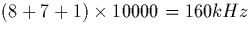

Tout d'abord, il est noter que les botiers proposent en option d'oprer
une vrification de transmission par ajout d'un bit de parit. En fait,
lorsque cette option est enclenche, un bit est supprim, celui de poids
binaire le plus faible (c'est--dire correspondant des valeurs modulo 2),
et remplac par le bit dit de parit, obtenu par la somme binaire des 7
bits prcdents. Cette opration divise donc par deux la prcision de
quantification du signal analogique (puisque l'on passe de 28 = 256
27 = 128 valeurs possibles) et ne permet, de plus, qu'une vrification
d'erreur de transmission, et non pas sa correction, puisque ce dispositif
est incapable de situer, sur les 8 bits (les 7 bits utiles, ou le bit de
parit lui-mme), l'erreur de transmission. Il est remarquer, aussi, que
ce dispositif n'est valable que pour des erreurs n'affectant qu'un seul des
8 bits transmis.
Aussi, il est apparu ncessaire de se protger des erreurs de transmission,
c'est--dire de les corriger lorsqu'elles occurrent: c'est tout l'intrt
du codage protecteur, que l'on peut mettre en fonction sur les botiers
grce un commutateur trois positions (message de 8 bits seul; ajout de la
parit; ajout du dispositif correcteur).
Normalement, le dispositif de codage protecteur contre les erreurs
introduit une certaine redondance dans le message. En effet, il faut
adjoindre une squence de contrle au mot initial, squence obtenue par
combinaison linaire binaire des bits du message, et donc non indpendante
de ces derniers. Il existe plusieurs algorithmes de codage protecteur, et
dans notre cas, celui retenu est le codage de Hamming, impos par le
botier utilis. Le principe est de se servir de bits dits de correction
pour localiser une erreur de transmission sur les bits utiles, i.e.
ceux qui manent de la quantification du message initial. Le code de
Hamming utilis ne permet toutefois de corriger des erreurs que sur un seul
bit (mais il faut bien arrter la sophistication quelque part!).
En fait, la thorie (cf Annexe B) montre qu'il serait ncessaire d'ajouter 7 bits de correction chacun des mots de 8 bits du message initial, mais cela impose quasiment le doublement du dbit d'information, et donc le doublement de la frquence de transmission des bits: il faudrait, pour le mme dbit d'information utile, passer d'une frquence d'horloge 80kHz une frquence de

. Or, les botiers utiliss dans la maquette ne permettent pas de construire des mots binaires de plus de 8 bits, aussi la solution retenue lorsqu'il y a codage de Hamming est-elle de non plus quantifier le signal analogique sur 8 bits, mais sur 4 seulement, auxquels seront ajouts les 3 bits de correction et le bit de parit, dans notre cas.En rsum, l'on aura toujours la transmission de mots binaires de 8 bits la frquence de 80kHz/bit (10kHz par mot de 8 bits) mais, suivant la position du commutateur trois positions du botier "metteur", l'on transmettra soit 8 bits utiles, soit 7, soit seulement 4. Cela donnera donc une quantification apparente du signal analogique initial, respectivement sur 256, 128 ou 16 valeurs. En fait, l'intrt du codage de Hamming sur ce botier est surtout pdagogique car, mme si ce dispositif corrige les erreurs de transmission numrique, il introduit un bruit de quantification (c'est--dire le passage d'une quantification sur 256 valeurs une de 16 valeurs seulement) assez important qui, en pratique, gne plus qu'il n'arrange: alors que la voix, sans correction d'erreurs, bnficie d'une rception correcte, avec protection elle devient quasiment inaudible, tant le bruit de fond reste prsent. Pour palier cet inconvnient, il suffirait donc de garder une quantification sur 8 bits, tout en doublant la frquence d'mission des bits. C'est probablement le type de solution que nous adopterons pour la construction de nos propres GSM...